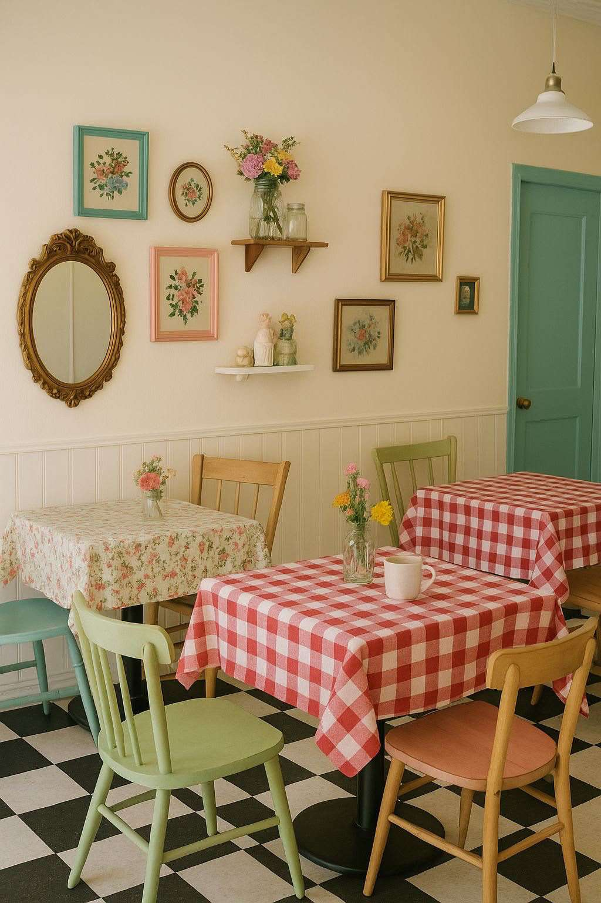

طواجن الفخّار 🔥
تُطهى وتُقدَّم في الفخّار داخل الفرن — طبق الإشارة بصريّاً ومذاقيّاً.
- من الفرن

مطعم أفران — عرض تشغيل مُعدّ لمالك الموقع
أطباق تُخبز في الفرن أمام عينك، وأجواء تعيدك إلى الستينات والسبعينات بكل تفاصيلها.
٠١ — الفكرة
الزمن الجميل مطعم أفران: أغلب أطباقنا تُخبز في الفرن — طواجن الفخّار، صواني اللحم والدجاج، الفطائر والمعجّنات، والأرز بالفرن. طريقة طهي واحدة تجمع المنيو كله وتمنحه هويّة واضحة.
والمكان يستحضر أجواء الستينات والسبعينات بكل تفاصيلها: الأثاث، الموسيقى، الروائح، والمذاق. حيث يلتقي عبق التراث العربي مع أصالة الطعم ودفء الضيافة.
الفرن ليس تفصيلاً تشغيلياً — بل مسرح. الضيف يرى الطبق يُدخل ويُخرج، ويشمّ قبل أن يذوق. وهذه طبقة تجربة لا تُنسخ بسهولة، ولا تُقارَن بمطعم يُخرج الطعام من مطبخ مغلق.
٠٢ — قلب الفكرة
ما يميّزنا، وما يجب أن يطمئنّ عليه مالك الموقع — في قسم واحد.
اضغط لإدخال الصينيّة
في المطاعم العادية يخرج الطعام من باب مغلق. عندنا، الفرن في الصالة: الضيف يرى الفخّار يدخل، ويسمع الخبز، ويشمّ قبل أن يذوق.
هذه ليست حركة تسويقيّة — بل ثلاث حواسّ تعمل قبل الطلب، وهي ما يرفع الفاتورة ويعيد الضيف.
موسيقى الزمن الجميل — مرّر المؤشّر لإيقاف الأسطوانة
مشهد: الفرن المكشوف نقطة جذب بصريّة دائمة، ومحفّز تصوير ونشر.
رائحة: الخبز الطازج أقوى أداة تسويق في الممرّ التجاري — ولا تحتاج ميزانية.
تشغيل: طريقة طهي واحدة تعني تدريباً أبسط، وجودة أثبت، وهدراً أقل.
تكلفة: الخبز بالفرن يسمح بتحضير دفعات، فتنخفض تكلفة العمالة للطبق.
نعلم أن الفرن يعني متطلّبات على المبنى، ولذلك نضعها على الطاولة من البداية بدل أن تُكتشف لاحقاً:
٠٤ — الهويّة
اللوحة اللونيّة والنقشات أدناه مستخرجة من هويّتكم الحالية نفسها — لم نستبدلها، بل نظّمناها ووسّعنا استخدامها.
الكحلي والأحمر من الشعار، والشرائط من خلفيّته.
خمس نقشات من بروفايلكم — أُعيد توظيفها كنظام لا كخلفيّات متفرّقة.
 دمشقي كحلي
دمشقي كحلي دمشقي أحمر
دمشقي أحمر زهور دقيقة
زهور دقيقة جينجهام أحمر
جينجهام أحمر جينجهام أزرق
جينجهام أزرق مخمل ذهبي
مخمل ذهبيalzamen aljameel، والشعار الرسمي يكتب
alzamen aldjameel، والنطاق المقترح يستخدم الثاني.
اختاروا كتابة واحدة وثبّتوها في كل شيء.
٠٥ — التجربة
تصوّرات مبدئيّة للاتجاه البصري، وليست تصاميم تنفيذيّة نهائيّة.


٠٦ — استكشف
مرّر المؤشّر — أو إصبعك على الجوال — داخل الإطار.
◦ مرّر لتُضيء ◦
اسحب الشريط. وعند وصول صورة الموقع فارغاً، تُستبدل الصورة اليمنى فيرى المالك مكانه قبل وبعد بعينه.

قبل
بعد
٠٧ — المنيو
أعدنا ترتيب الأقسام ليتقدّم ما يُخبز في الفرن — لأن هذا ما يميّزكم، وكان مدفوناً في منتصف المنيو.
تُطهى وتُقدَّم في الفخّار داخل الفرن — طبق الإشارة بصريّاً ومذاقيّاً.
صواني اللحم والدجاج والخضار، تُخبز بالبهارات حتى تتداخل النكهات.
معجّنات الصاج الطازجة والفطائر المخبوزة أمام الضيف.
أطباق متنوّعة من الأرزّ المتبّل بأجود أنواع البهارات والطهي المتقَن، لتقدّم الطعم الأصيل والمذاق الغنيّ.
تشكيلة شهيّة من المقبّلات والسلطات الطازجة التي تفتح الشهيّة وتُكمل متعة الوجبة.
تشكيلة مختارة من المشاوي المعدّة بنكهات غنيّة وطعم أصيل.
شاورما محضّرة على الطريقة البيتيّة.
تشكيلة غنيّة من أطباق المكرونة بصلصاتها اللذيذة ونكهاتها الفاخرة. ويمكن تقديمها بالفرن (جراتان).

حلويات الزمن الجميل وحلويات عصريّة — ومنها ما يُخبز في الفرن.

مشروبات ساخنة وباردة، وعصائر طازجة، ومشروبات الزمن الجميل.
٠٨ — القيمة المضافة
هذا أهمّ قسم في العرض — وكان غائباً تماماً عن النسخة الأولى.
الخبز الطازج يسحب الزائر من الممرّ قبل أن يرى اللافتة. ميزة لا يملكها أي مستأجر آخر في الموقع.
مطعم المفهوم يجلب زواراً مقصودين للموقع، والحركة التي نجلبها تنفع الجوار التجاري كله.
الغداء، العصر (فطائر وقهوة وحلويات من الفرن)، والعشاء — إشغال موزّع يرفع حركة الموقع في الفترات الميتة.
الفرن المكشوف والديكور النوستالجي محفّزا تصوير بطبيعتهما — تسويق مجّاني متجدّد يحمل اسم الموقع.
نستثمر في تجهيزات دائمة عالية الجودة تبقى في الموقع وترفع قيمته الإيجاريّة مستقبلاً.
فرن مبني وديكور بهذا المستوى يعني التزاماً طويلاً — نحن لا نبحث عن موسم.
نكمّل المستأجرين الحاليين ولا نزاحمهم على نفس الطلب.يُستكمل: قائمة المستأجرين الحاليين
منفتحون على إيجار ثابت، أو نسبة من الإيراد، أو صيغة مختلطة — بما يناسب سياستكم.
٠٩ — الأرقام والجدوى
— العائلات؟ الشباب؟ الزوّار؟
— الأحياء المحيطة ونصف قطرها
— ومَن يقدّم مفهوماً مشابهاً
١٠ — الجدارة
سؤال مالك الموقع الأول ليس «ما فكرتكم؟» بل «هل تدفعون الإيجار بانتظام، وتبقون؟»
التمويل ذاتي بالكامل — لا ننتظر مستثمراً ولا قرضاً لبدء التنفيذ.
— كشف حساب / خطاب بنكي / كفالة يُستكمل
— السجل التجاري والملاك يُستكمل
— الأسماء والخبرة والمشاريع السابقة يُستكمل
— الاسم والسيرة وخبرة الأفران يُستكمل
— الاسم والخبرة يُستكمل
١١ — التنفيذ
توقيع العقد، ورخصة البلدية، وموافقة الدفاع المدني على منظومة الفرن.
— المدّةالمخططات المعماريّة والميكانيكيّة — بما فيها مسار المدخنة والشفّاط — واعتمادها من إدارة الموقع.
— المدّةتنفيذ الفرن والديكور وفق ضوابط الموقع وساعات العمل المسموحة.
— المدّةتركيب المطبخ، وتوظيف الفريق وتدريبه على الفرن تحديداً.
— المدّةافتتاح ناعم لضبط أوقات الخبز والجودة والخدمة.
— المدّةحملة افتتاح تحمل اسم الموقع وتجلب له حركة.
— التاريخنحضر بملفّ كامل: الإثبات المالي، المخططات المبدئيّة ومسار المدخنة، والجدول الزمني — ونستقبل أي اشتراطات لديكم.
النطاق المقترح: www.alzamen-aldjameel.com